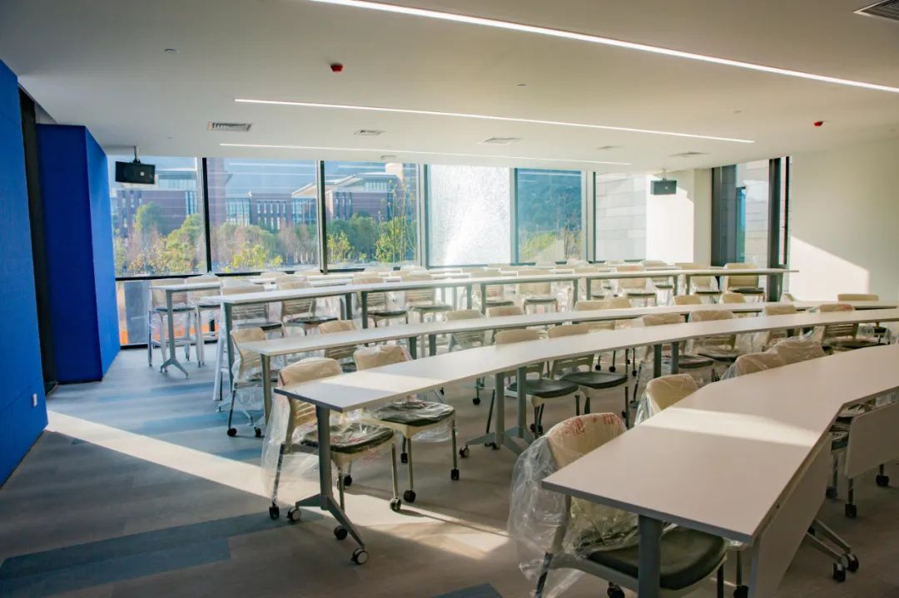
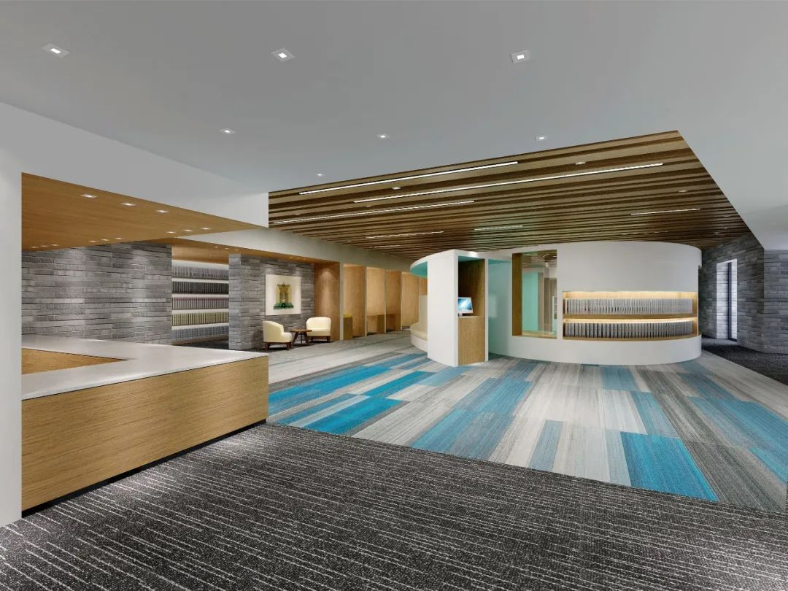
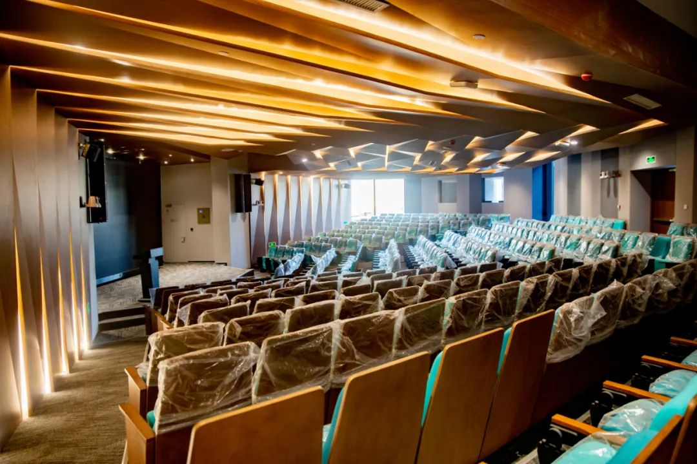
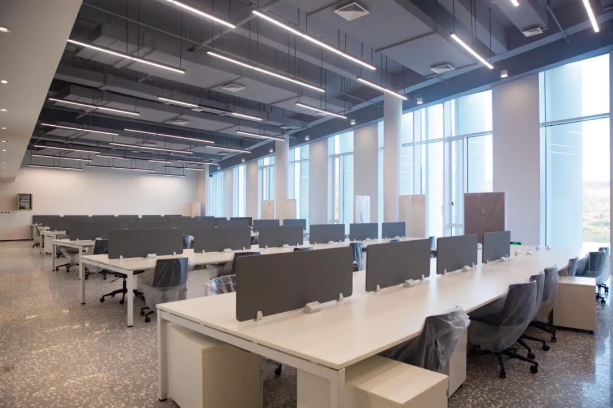

The Ge He Kai Building is located on the central axis of the Wenzhou-Kean University campus. It is the "front door" of the campus and the first building that campus visitors see. The south side of the building faces the crescent-shaped lawn in front of the building, where formal events such as the opening ceremony are held. The north side of the building faces the lake and the Student Learning and Activity Center, which is the "crossroads" of the campus. The building facade is designed with an asymmetrical design to express an open and lively intention. The rooftop viewing platform on the third floor is a key feature of the building design. People can climb this special roof garden and walk throughout the platform to enjoy the views of the campus from all directions, day and night.
Classroom
Library
ReportRoom
GHKBuildingWorkshop